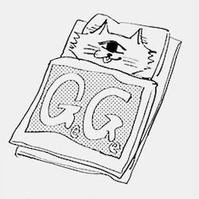
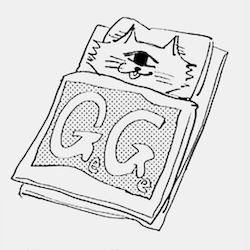

Click an image above to discover more about the character
Scroll for more about Jujutsu Kaisen
↓ ↓ ↓
Jujutsu Kaisen
Plot
The story of Jujutsu Kaisen is set in a world where Cursed Spirits feed on unsuspecting humans and fragments of the legendary and feared demon Sukuna have been lost and scattered about.
Itadori Yuji is an expert at track and field. But he has zero interest running around in circles, he's happy as a clam in the Occult Research Club. Although he's only in the club for kicks, things get serious when a real spirit shows up at school!
When Itadori's friends open the cursed object that they found, things go south as the cursed spirits that it spawned start roaming in school. As Fushiguro and Itadori are almost defeated by one of the spirits, Itadori then swallows the cursed object and gains its power. As a result, Itadori becomes cursed by the object and gets dragged into Fushiguro's thrilling world of jujutsu sorcerers and cursed spirits.
Main Characters

- Itadori Yuji
- Fushiguro Megumi
- Kugisaki Nobara
- Gojo Satoru
- Sukuna
Cursed Technique

Cursed Techniques (Jutsushiki) are abilities fueled by cursed energy. Different types include innate techniques, barrier techniques, shikigami, new shadow style, and more.
Technique Activation
A cursed technique is activated through the act of pouring cursed energy into it, utilising one of two processes; Lapse or Reversal. If cursed energy is comparable to electricity, cursed techniques are the appliances that use that power to function. Cursed energy is processed through a procedure akin to a mathematic formula within the user to activate a cursed technique.
My Top 5 fav Cursed Techniques
5. Mahito's Idle Transfiguration
4. Fushiguro Megumi's Ten Shadow Technique
3. Geto Suguru's Cursed Spirit Manipulation
2. Nanami Kento's Ratio
1. Gojo Satoru's Limitless

Author
Akutami Gege (born February 26, 1996) is a Japanese manga artist and the author of Jujutsu Kaisen.
Akutami Gege is a pen name and the author's real name is unknown. They use an image of a one eyed cat.
Akutami Gege's Persona
 

In 2018, Akutami Gege started their first full serialization with Jujutsu Kaisen in issue 14 of Weekly Shonen Jump. Jujutsu Kaisen serves as the follow-up series to Jujutsu Kaisen 0: Jujutsu High.